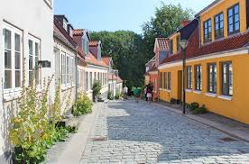

Aarhus
i Aarhus kan man lave en masse ting. ting 1 turen op til slotet
vil jeg give 5 stjarner det er en smok tur og lige ved siden a slotet er da en
legeplas som er de små med på. ting 2 selve byen er også noget som gør Aarhus til
Aarhus da er en masse fine ting som letbangen som køger i genem hele byen da er også
arnter ting som åen og alle kaferene rastorangerne som likke ved siden a åen og er
da er også Aarhus s.t og hvis i er i shjope humør så er da centeret i S.T også så er
da også Aarhus haven hvor molslilen likker til man kan også tag en hygle tur med
letbangen og hvis du vil tag turen i genem byen så skal du tag med L2 kan køre to
steder hend den første sted er skyby og det andet sted man kan køre hen til Lystop
og i den anden ende bække letbaner kør til enten til Aarhus eller oder og da er også
renbuen den neste ting vi skal besøge er DOK1 den store bykning er et a Aarhus
højhuse
Odense

i odense kan man lave en masse ting selve byen er en fin by
som gør odense by til en fin by odense s.t er også en fin s.t med en p keller
hvis i er til at se på byr så vil jeg anpefale odense zoo og hvis i er til toge
så er da odense jernbane museom hvor du kan finde et a Danmarks første toge
til et my tog og på odnse jernbane museom kan man også komme ud og køre med et
minne model tog man kan sede i
Kalundborg
i kalundborg kan man lave en masse ting hvis
du har børn med som er til at lege så vil jeg anpefale haveneparken
en hygli legeplas ved havenen hvor man kan se de både som seler ind i
haven hvis du er til en gå gade så er da også en i kalundborg hvor da er putiker
ned a gågaden
København

i København kan man lave en masse ting hvis man er til
at kune se ud over København så er da rune tårn det tårn er et tårn som
crstijan den 4 dykket hvis du elsker og kikke på både så er da nyhaven hvor du
også kan tage en kanalrundfart rundt i københavn og få en grunti histori om
københavn hvis du har lyst til komme nonge forskeli steder hen så skal du tag
en hop on hop off bus hvor nor du køber bilette kan du bruge den hele dagen
hvis du er til at kikke på dyr så er da københavnens ZOO og hvis du er til ville
ting så er da tivoli de har alt fra karoseler til forlystlser hvor man henger på hodet
tivoli er for alle